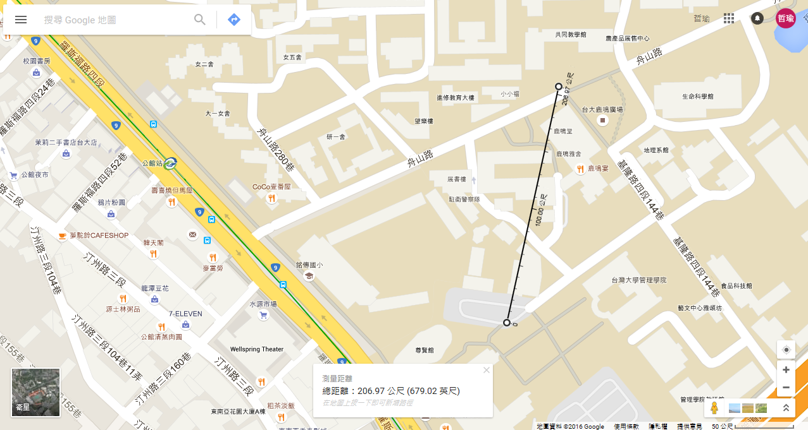
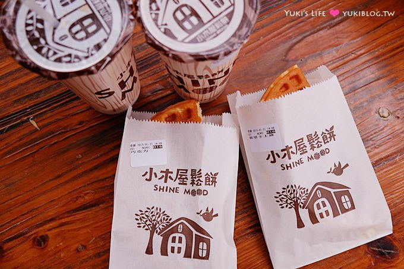
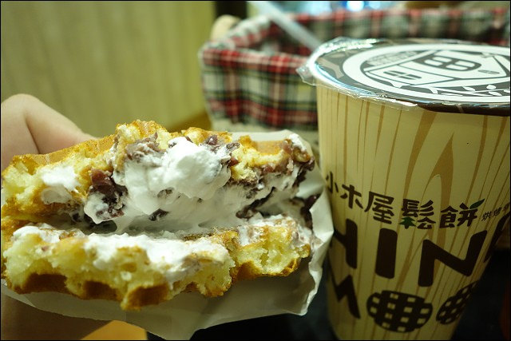

| 距離(經由Google計算，約為) |  |
| 騎腳踏車所需時間(速度約5.6m/s，採用維基百科建議數據) | 約需37秒 | 餐廳資訊 |
小木屋鬆餅
鬆餅 甜： 有各個不同的口味的鬆餅，巧克力、蜂蜜、鮮奶油、紅豆鮮奶油等等 鬆餅 鹹： 對於不喜歡吃甜鬆餅的人也可以考慮鹹口味的鬆餅，有玉米蔬菜、起司蔬菜、水果蔬菜等等 特色： 價格便宜，口感實在，風味俱佳，學生買會打折@@ 冷飲： 種類多樣化，有分特調、鮮奶、咖啡、戀茶等等系列 口感獨特，杯子特別有提升到質感XDD |
| 價位 | 約50元/餐 |
| 圖片 | 
巧克力鮮奶油鬆餅真的好吃 |